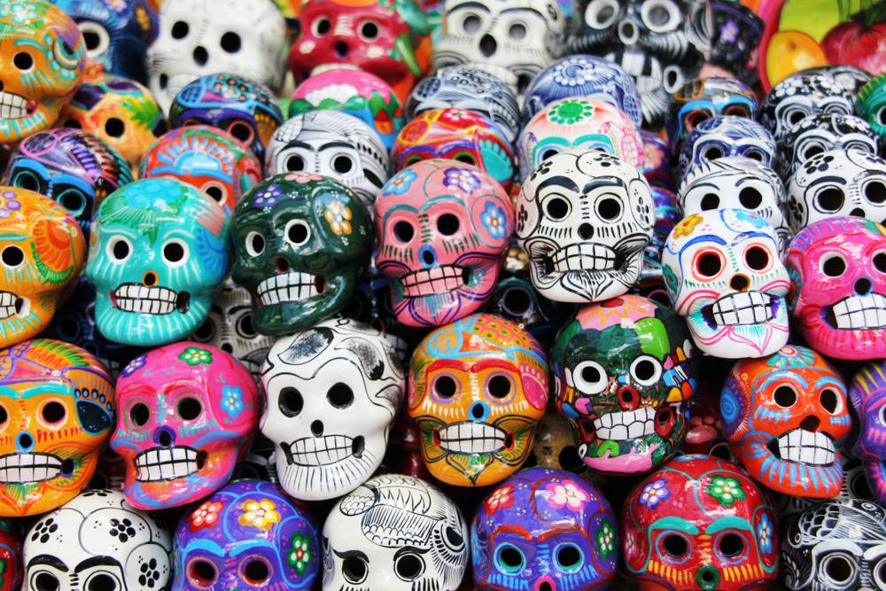
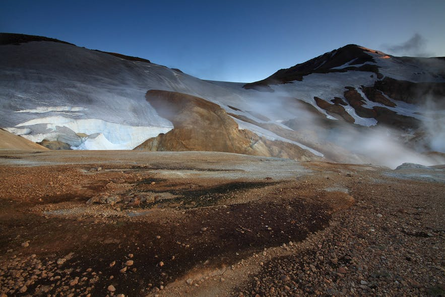

{{amsterdamHeader}}
{{amsterdamSec}}
Screaming Beans
Temat kawy to tutaj nie przelewki. Jak wskazuje nazwa, mimo silnej
orientacji na dobrą kawę,
za barem nie spotkasz kawowych snobów, tylko sympatyczną i dobrze przygotowaną obsługę. Jedne z najlepszych oferowanych
tu ziaren pochodzą z Etiopii i Tanzanii, a serce klientów roztapia tutejsze podwójne doppio (dwa pełne szoty espresso).
Jeśli zatrzymujesz się w Hotelu IX, który mieści się tuż nad barem albo jeśli akurat robisz zakupy w ‚Nine Streets‚ – przyjdź
tutaj na smaczne lunchowe tosty.
Adres: Hartenstraat 12, De Negen Straatjes
Godziny otwarcia: poniedziałek-piątek godz. 8:00-17:00, sobota godz. 9:00-17:00, niedziela 10:00-17:00

Koffiehuis De Hoek
Mała, bezpretensjonalna knajpka De Hoek to idealne miejsce,
aby zaobserwować cały przekrój społeczny miasta,
który przychodzi tu naładować baterie kofeiną i przekąskami. Usytuowany przy centralnym kanale Prinsengracht na rogu Reestraat,
nieopodal Domu Anny Frank, cieszy się uroczym widokiem z okien. Puszyste naleśniki, obfite kanapki i omlety można kupić w ramach
zestawów śniadaniowych z napojem za 10 euro. Po południu warto tu zajrzeć na holenderski specjał, szarlotkę z dużą ilością jabłek.
Adres: Prinsengracht 341, De Negen Straatjes
Godziny otwarcia: poniedziałek-piątek godz. 8:00-16:30, sobota i niedziela godz. 9:00-17:00

Koko Coffee & Design
Bar kawowy zlokalizowany w designerskim butiku Koko zaspokoi zarówno wielbicieli mody, jak i kawowych smakoszy.
Sprzedają tu wyjątkowe ubrania, akcesoria do wystroju wnętrza i inne ładne przedmioty. Butik znajduje się w starym domu nad
kanałem nieopodal słynnej dzielnicy Czerwonych Latarni. Niech ta lokalizacja Cię nie odstrasza – to idealne miejsce,
żeby uciec od krążących wszędzie grup świętujących wieczory panieńskie i kawalerskie. Propozycje kaw w menu wciąż się zmieniają,
a do tego sprzedają tu pyszną herbatę, na przykład Massai Chai.
Adres: Oudezijds Achterburgwal 145, De Wallen
Godziny otwarcia: poniedziałki: zamknięte, wtorek-piątek godz. 9:00-18:30, sobota godz. 10:00-18:00, niedziela godz. 12:00-18:00

Al Ponte
Trudno wybrać, co w Al Ponte jest najlepsze. Czy to ten domowy, włoski klimat, genialna lokalizacja nad rzeką w
często niedocenianym Amsterdam Noord? Usiądź na zewnątrz, w słońcu, zawieś oko na przepływających łódkach, poczuj zapach
pieczonych ziaren i domowego ciasta cytrynowego. Serwują tu też smaczne dania dla niejedzących mięsa – weźmy choćby grillowane
bakłażany, pomidory i wegańskie pesto. Przed wejściem na prom I powrotem do centrum, koniecznie złap na drogę tutejsze panini
imbottito.
Adres: Meeuwenlaan 2, IJplein, tuż obok miejsca, do którego podpływają promy
(bezpłatny kurs promem z punktu za stacją Amsterdam)
Godziny otwarcia: LATO: poniedziałek-piątek godz. 8:00-18:00, sobota-niedziela godz. 10:00-18:00;
ZIMA: poniedziałek-piątek godz. 8:00-15:00, sobota-niedziela 10:00-16:00

Café Pieper
Okolice Leidesplein to popularne miejsce wśród lokalnych Nocnych Marków, ale ta doceniona “brązowa kawiarnia” n
iewiele ma wspólnego z tutejszą sceną klubową. Niski sufit, okna z witrażami i mieszkający tu kot nadają XVII-wiecznemu
wnętrzu dodatkowego charakteru. Zamów bitterballen (smaożone hoelnderskie przekąski z mięsa i ziemniaków) zanim przystąpisz do
dokonywania wyboru piw podawanych w tradycyjnych kuflach. Wiosną koniecznie usiądź na tarasie i podziwiaj jak kwitną okoliczne
drzewa.
Adres: Prinsengracht 424, Centrum
Godziny otwarcia: poniedziałek-sobota godz. 12:00-1:00, niedziela 14:00-20:00

{{mexicoHeader}}
{{mexicoSec}}
Día de Muertos, czyli Dzień Zmarłych to wyjątkowy festiwal. Zaproszeni? Wszyscy, szczególnie zmarli.
Ma radosny charakter - jest się w końcu z czego cieszyć! Meksykanie wierzą, że 1 i 2 listopada ich bliscy-zmarli mogą powrócić
do swoich domów, by nacieszyć się towarzystwem rodziny. Dlatego należy pomóc duszom znaleźć drogę do domu i jak najlepiej je
powitać.

Kolorowo i odświętnie
Meksykanie przystrajają więc domy łukami z żółtych nagietków lub
aksamitek. Wznoszą ołtarze pełne kwiatów, kolorowych świeczek i owoców. Nie brakuje jedzenia, by duchy mogły się posilić po
długiej podróży. Kobiety spędzają cały dzień na gotowaniu ulubionych potraw zmarłej osoby.
Święto to jest szczególnie ważne dla rodzin, które straciły bliską osobę w ciągu ostatniego roku.
Ważnym punktem uroczystości jest wizyta na cmentarzu. Potem odbywa się piknik - serwuje się wówczas pulque (coś w rodzaju wina
z agawy) tequilę lub mezcal oraz doprawioną chili czekoladę, a także cygara. Przychodzi czas na tańce do muzyki granej przez
mariachi. Skrzypce, różne rodzaje gitar, mandoliny i trąbki. Danse macabre!
Kostek na rowerze
Na ulice „wychodzą” kościotrupy ubrane w suknie, boa i kapelusze.
Często przedstawiane są w trakcie wykonywania codziennych czynności: jazdy na rowerze, gry na gitarze czy podczas ślubu.
Sklepowe witryny zapełniają się miniaturowymi trumienkami, czaszkami i szkieletami. Te wykonuje się z czekolady, marcepanu,
cukru, papieru lub gliny. Słodkie czaszki stały się symbolem Día de Muertos, tak samo jak wydrążone z dyni lampiony w Halloween.
A miało być tak smutno
Día de Muertos obchodzone jest w całym kraju, ale najhuczniej
świętuje się na południu Meksyku. Wywodzi się jeszcze z tradycji azteckiej i może liczyć nawet 3 tysiące lat. Początkowo
wypadało w sierpniu, ale kolonizatorzy przenieśli je na listopad, by przybliżyć lokalnym tradycję chrześcijańską. Próbowano
narzucić miejscowej ludności pełen smutku i refleksji sposób świętowania. Nie udało się. Bo Meksykanie są ze śmiercią za pan brat.
{{icelandHeader}}
{{icelandSec}}
Lodowiec to duży, nietopniejący blok lodu.
Lodowce tworzą się na lądzie jedynie, kiedy śnieg pozostaje tam na tyle długo, że zamienia się w lód. Przez lata, a nawet
stulecia, śnieg jest kompresowany w gęsty lód.
Lodowce mają pewną unikatową właściwość - mogą się poruszać. Przesuwają się do przodu z uwagi na ich dużą masę - są jak
bardzo wolne rzeki. Mimo, że lodowce są nietopniejącymi masami, w trakcie poruszania powoli deformują się, tworząc szczeliny,
pęknięcia i czasem piękne jaskinie lodowcowe.
Lodowiec Vatnajokull
Lodowiec Vatnajökull jest największy na
Islandii i w Europie! Vatnajökull jest położony na południowym wschodzie Islandii i jest tak duży, że z każdej strony ma wiele
jęzorów lodowcowych (jak zresztą większość lodowców na Islandii), z czego każdy z nich nosi osobną nazwę.
Lodowiec Langjokull
Langjökull to drugi pod względem wielkości
lodowiec na Islandii. Nazwa oznacza “długi lodowiec” i bierze się z jego kształtu. Jest on usytuowany na zachodzie islandzkiego
interioru i można go bez problemu zobaczyć z obszaru Geysir.
Langjökull jest bardzo popularnym miejscem do odbywania wycieczek skuterami śnieżnymi wraz ze zwiedzaniem trasy
Golden Circle - jest to skrót z wodospadu Gullfoss. Taka przejażdżka jest dobrym sposobem na zobaczenie dużej części lodowca
i poczucie jego klimatu.
Lodowiec Hofsjokull

Lodowiec Hofsjökull to trzeci największy
lodowiec na Islandii i jednocześnie jest wśród tych, do których najtrudniej się dostać. Jest położony w centralnej części
islandzkich wyżyn, które są dostępne dla samochodów jedynie latem, wyłącznie wtedy jeżeli posiadasz napęd na 4 koła oraz masz
przy sobie wsparcie doświadczonego przewodnika, który doskonale zna ten teren.